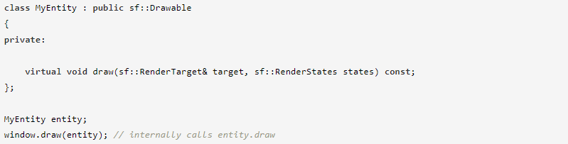
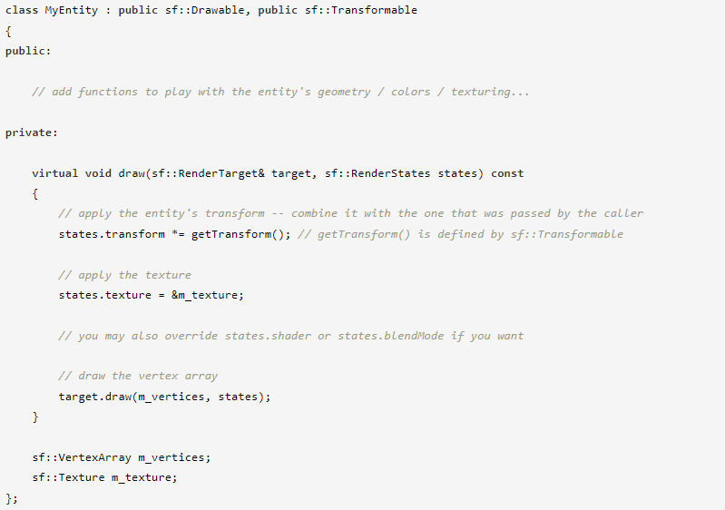
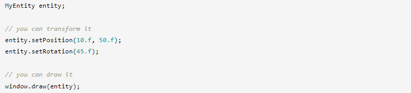
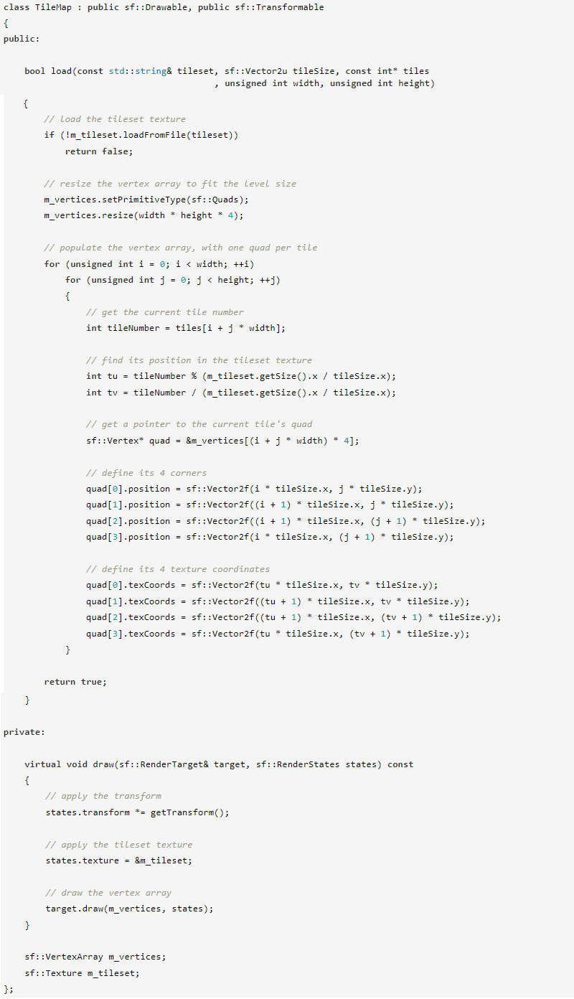
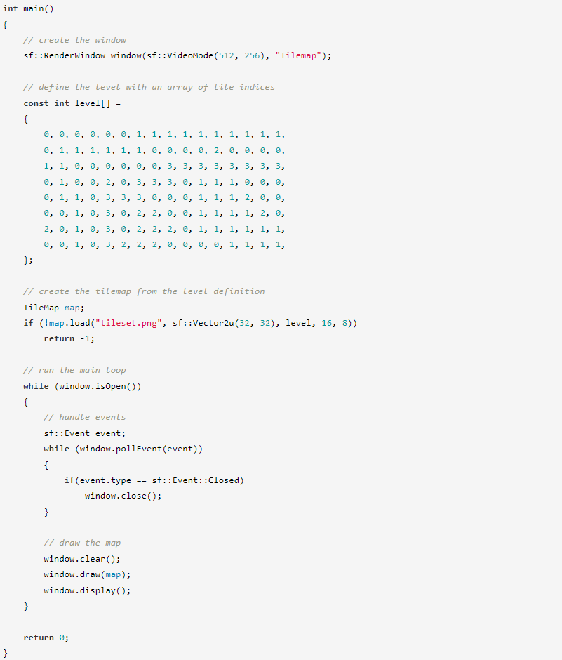
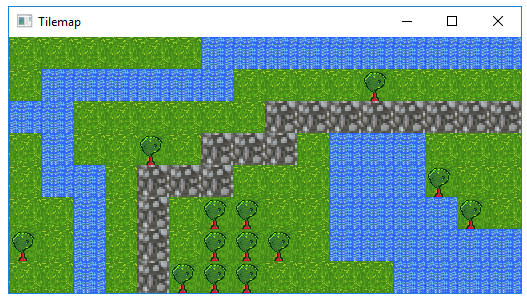
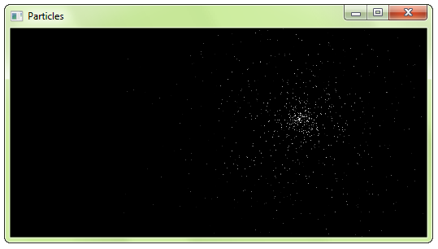
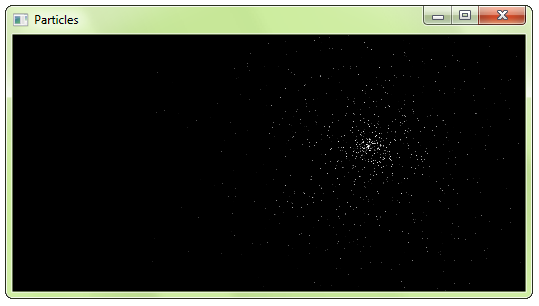

Создание собственных сущностей с массивами вершин
Вступление
SFML предоставляет простые классы для наиболее распространенных 2D-объектов. И хотя из этих стандартных блоков можно легко создавать более сложные объекты, это не всегда самое эффективное решение. Например, вы очень быстро достигнете предела возможностей вашей видеокарты, если будете рисовать большое количество спрайтов. Причина в том, что производительность в значительной степени зависит от количества вызовов функции рисования. Действительно, каждый вызов включает в себя установку набора состояний OpenGL, сброс матриц, смену текстур и т. д. Все это требуется даже при простом рисовании двух треугольников (спрайта). Это далеко не оптимально для вашей видеокарты: современные графические процессоры предназначены для обработки больших пакетов треугольников, обычно от нескольких тысяч до миллионов.
Чтобы заполнить этот пробел, SFML предоставляет механизм более низкого уровня для рисования: массивы вершин. На самом деле массивы вершин используются внутри всех остальных классов SFML. Они позволяют более гибко определять 2D-объекты, содержащие столько треугольников, сколько вам нужно. Они даже позволяют рисовать точки или линии.
Что такое вершина и почему они всегда в массивах?
Вершина — это наименьший графический объект, которым вы можете манипулировать. Короче говоря, это графическая точка: естественно, у нее есть 2D-позиция (x, y), а также цвет и пара текстурных координат. Мы рассмотрим роли этих атрибутов позже.
Вершины (множественное число от вершины) сами по себе мало что делают. Они всегда группируются в примитивы: точки (1 вершина), линии (2 вершины), треугольники (3 вершины) или четырехугольники (4 вершины). Затем вы можете объединить несколько примитивов вместе, чтобы создать окончательную геометрию объекта.
Теперь вы понимаете, почему мы всегда говорим о массивах вершин, а не только о вершинах.
Простой массив вершин
Давайте теперь посмотрим на класс sf::Vertex. Это просто контейнер, который содержит три общедоступных члена и никаких функций, кроме его конструкторов. Эти конструкторы позволяют вам создавать вершины из набора необходимых вам атрибутов — вам не всегда нужно окрашивать или текстурировать вашу сущность.
... или, используя правильный конструктор:
Теперь давайте определим примитив. Помните, примитив состоит из нескольких вершин, поэтому нам нужен массив вершин. SFML предоставляет для этого простую оболочку: sf::VertexArray. Он обеспечивает семантику массива (аналогично std::vector), а также хранит тип примитива, определяемого его вершинами.
Ваш треугольник готов, и теперь вы можете его нарисовать. Рисование массива вершин можно выполнить аналогично рисованию любого другого объекта SFML с помощью функции рисования:

Вы можете видеть, что цвет вершин интерполирован для заполнения примитива. Это хороший способ создания градиентов.
Обратите внимание, что вам не обязательно использовать класс sf::VertexArray. Он просто определен для удобства, это не что иное, как std::vector<sf::Vertex> вместе с sf::PrimitiveType. Если вам нужна большая гибкость или статический массив, вы можете использовать собственное хранилище. Затем вы должны использовать перегрузку функции рисования, которая принимает указатель на вершины, количество вершин и тип примитива.
Примитивные типы
Давайте ненадолго остановимся и посмотрим, какие примитивы вы можете создать. Как объяснялось выше, вы можете определить самые основные 2D-примитивы: точку, линию, треугольник и четырехугольник (четырехугольник существует только для удобства, внутренне графическая карта разбивает его на два треугольника). Существуют также «цепочечные» варианты этих типов примитивов, которые позволяют совместно использовать вершины между двумя последовательными примитивами. Это может быть полезно, потому что последовательные примитивы часто каким-то образом связаны.
Давайте посмотрим на полный список:
| Примитивный тип | Описание | Пример |
|---|---|---|
| sf::Points | Набор несвязанных точек. У этих точек нет толщины: они всегда будут занимать один пиксель, независимо от текущего преобразования и вида. | |
| sf::Lines | Набор несоединенных линий. У этих линий нет толщины: они всегда будут шириной в один пиксель, независимо от текущего преобразования и вида. | |
| sf::LineStrip | Набор связанных линий. Конечная вершина одной линии используется как начальная вершина следующей. | |
| sf::Triangles | Набор несоединенных треугольников. | |
| sf::TriangleStrip | Набор соединенных треугольников. Каждый треугольник имеет общие две последние вершины со следующим. | |
| sf::TriangleFan | Набор треугольников, соединенных с центральной точкой. Первая вершина является центром, затем каждая новая вершина определяет новый треугольник, используя центр и предыдущую вершину. | |
| sf::Quads | Набор несвязанных квадов. 4 точки каждого квадроцикла должны быть определены последовательно, либо по часовой стрелке, либо против часовой стрелки. |
Текстурирование
Как и другие объекты SFML, массивы вершин также могут быть текстурированы. Для этого вам нужно манипулировать атрибутом texCoords вершин. Этот атрибут определяет, какой пиксель текстуры сопоставляется с вершиной.
Координаты текстуры определяются в пикселях (как и textureRect спрайтов и фигур). Они не нормализованы (между 0 и 1), как могут ожидать люди, привыкшие к программированию на OpenGL.
Массивы вершин — низкоуровневые объекты, они имеют дело только с геометрией и не хранят дополнительные атрибуты, такие как текстура. Чтобы нарисовать массив вершин с текстурой, вы должны передать его непосредственно в функцию рисования:
Это короткая версия, если вам нужно передать другие состояния рендеринга (например, режим наложения или преобразование), вы можете использовать явную версию, которая принимает объект sf::RenderStates:
Преобразование массива вершин
Преобразование похоже на текстурирование. Преобразование не сохраняется в массиве вершин, вы должны передать его функции рисования.

Или, если вам нужно передать другие состояния рендеринга:
Чтобы узнать больше о преобразованиях и классе sf::Transform, вы можете прочитать руководство по преобразованию сущностей.
Создание сущности, подобной SFML
Теперь, когда вы знаете, как определить свой собственный текстурированный/цветной/преобразованный объект, не было бы неплохо обернуть его в класс в стиле SFML? К счастью, SFML упрощает эту задачу, предоставляя базовые классы sf::Drawable и sf::Transformable. Эти два класса являются основой встроенных сущностей SFML sf::Sprite, sf::Text и sf::Shape.
sf::Drawable — это интерфейс: он объявляет одну чистую виртуальную функцию и не имеет ни членов, ни конкретных функций. Наследование от sf::Drawable позволяет вам рисовать экземпляры вашего класса так же, как классы SFML:
Обратите внимание, что это не обязательно, вы также можете просто иметь аналогичную функцию рисования в своем классе и просто вызывать ее с помощью entity.draw(window). Но другой способ, с sf::Drawable в качестве базового класса, более удобен и последователен. Это также означает, что если вы планируете хранить массив рисуемых объектов, вы можете сделать это без каких-либо дополнительных усилий, поскольку все рисуемые объекты (SFML и ваши) являются производными от одного и того же класса.
Другой базовый класс, sf::Transformable, не имеет виртуальной функции. Наследование от него автоматически добавляет в ваш класс те же функции преобразования, что и другие классы SFML (setPosition, setRotation, move, scale,...). Вы можете узнать больше об этом классе в учебнике по преобразованию объектов.
Используя эти два базовых класса и массив вершин (в этом примере мы также добавим текстуру), вот как будет выглядеть типичный графический класс, подобный SFML:
Затем вы можете использовать этот класс, как если бы он был встроенным классом SFML:
Пример: карта тайлов (TileMap)
С тем, что мы видели выше, давайте создадим класс, который инкапсулирует карту тайлов. Вся карта будет содержаться в одном массиве вершин, поэтому отрисовка будет очень быстрой. Обратите внимание, что мы можем применить эту стратегию только в том случае, если весь набор тайлов может поместиться в одну текстуру. В противном случае нам пришлось бы использовать как минимум один массив вершин для каждой текстуры.
А теперь приложение, которое его использует:
 Вы можете скачать набор тайлов, использованный для этого примера тайловой карты, здесь.
{kind=link}
Пример: система частиц
Этот второй пример реализует другую общую сущность: систему частиц. Этот очень простой, без текстур и с минимальным количеством параметров. Он демонстрирует использование примитивного типа sf::Points с динамическим массивом вершин, который изменяется в каждом кадре.

И небольшая демонстрация, которая его использует:
 
